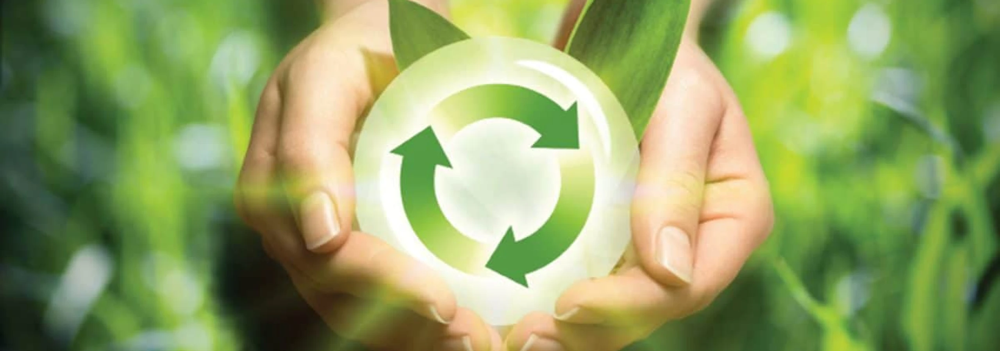

Wednesday , 21 Agu 2024
The Circular Economy of Plastics: From Waste to Resourcet
As we face the growing problem of plastic waste, our vision is clear: to transform discarded plastics like PET, polypropylene, and other high and low-density materials into valuable resources. This vision is rooted in the concept of a circular economy, where waste is not discarded but reimagined and reintegrated into the production cycle.
The Current State of Plastic Waste
Plastic waste, including materials like PET and polypropylene, represents a significant environmental challenge. Traditional waste management practices often fail to adequately address the volume of plastic waste, leading to widespread pollution and ecological damage. The need for innovative solutions is urgent.
Embracing a Circular Economy
Our approach involves adopting a circular economy model, where plastics are not viewed as waste but as resources. Through advanced recycling processes, discarded plastics are converted into new materials that can be used in manufacturing. This process reduces the need for virgin plastic production and minimizes environmental impact.
Advantages of Recycled Plastics
Recycling plastics offers several benefits. It conserves natural resources by reducing the demand for new materials and lowers greenhouse gas emissions associated with plastic production. Additionally, it supports a circular economy where materials are continuously reused, contributing to sustainability and reducing waste.
Moving Towards a Sustainable Future
To achieve our vision, collaboration is key. Industries, governments, and consumers must work together to support recycling initiatives and sustainable practices. By investing in recycling technologies and embracing circular economy principles, we can transform plastic waste into valuable resources and reduce our collective environmental footprint.